OpticalRec：用于多模态推荐的统一光学视觉语言表示
论文： OpticalRec: Unified Optical Vision-Language Representation for Multimodal Recommendation。作者与机构： Yueqi Wang、Zitian Guo为共同一作，第一作者主机构为加州大学圣迭戈分校；合作机构包括阿里巴巴、伊利诺伊大学厄巴纳香槟分校、香港理工大学、香港中文大学、得克萨斯农工大学。来源与时间： arXiv:2610.05432，v1于2026年10月4日18:12:55 UTC提交，本次在2026年10月7日北京时间核对官方事实包与13页原文。代码与独立项目页未核验，以下实验均为作者报告，未执行代码复现。
1. 背景和问题
多模态推荐长期受制于物品图文语义交互编码不足，限制了物品表示学习和用户物品匹配；分别编码后再进行僵硬的晚融合，会遗漏原生图文交互并扭曲跨模态语义。
论文从一个具体的商品理解问题切入：图片能显示服装的款式、形状和颜色，标题、品牌、类别与价格则提供用途、身份和消费定位。一个带有圣诞图案的猫咪服装，其视觉内容和文字描述并非两份可以互相替代的证据。推荐模型需要把文字里的对象、节日和商品类型对应到图像区域，才能判断用户喜欢的是宠物服装、某种节日主题，还是图片中显眼的颜色。单独获得一幅图片的总体向量和一段文字的总体向量，可能已经在压缩阶段舍弃了这种局部对应关系。本文因此把问题放在物品特征的输入与编码端，而不是再提出一种更复杂的推荐图结构。
这种选择与多模态协同过滤的常见分工有关。预训练视觉或语言模型负责提供固定物品特征，推荐模型再利用用户点击、购买或其他交互学习偏好。内容语义和行为语义来自不同来源：前者可以告诉模型商品是什么，后者才告诉模型哪些用户与哪些商品有关联。视觉语言模型预训练中的对齐能力，有机会改善固定特征；但它本身没有替代用户交互图，也没有直接生成某个用户的购买决策。本文评估的是这两类信息如何结合，而不是让大模型根据提示词直接输出推荐清单。
作者指出，已有方法通常先用图像编码器处理图片，再用文本编码器处理文字，随后采用相加、拼接或图融合。即使两个编码器在预训练时受过图文对齐监督，编码一个具体商品时仍可能没有真正交换局部信息。相加还需要两个向量的坐标语义兼容；拼接保留向量但不会自动产生细粒度互动；基于相似度的图传播则首先依赖已有特征构造邻接关系。下游模型可以缓解偏置，却难以恢复上游压缩时没有保留下来的对象与词语对应。这里最值得研究的是交互发生的时机，以及下游是否能够使用这些交互。
需要保留一个数学边界：独立编码不意味着所有联合信息必然消失。如果两个编码器充分保留各自输入，拼接后的联合向量仍可能包含相关性；后续可训练函数也可能利用它们。因此，论文对晚融合的批评更适合解释为实践中的表征瓶颈和归纳偏置，而不是关于任何拼接运算都会严格损失信息的普遍定理。真正有意义的比较，应固定可用信息、编码容量与训练预算，检验早期互动能否改善推荐相关特征，而不是仅由结构名称判断优劣。
提示式视觉语言编码是比简单独立编码更强的对照。它把图片经过视觉编码器得到的表示映射成语言模型能接收的token，再与文本token一起进入语言解码器。此时图文已经能够在语义层互动，但视觉编码器看到的仍只是图片，尚不能根据商品标题改变视觉区域间的关系。OpticalRec的提议进一步前移：先把文字变成图像中的可见字形，让商品图片和文字共同成为视觉编码器的输入。这样，视觉自注意力也有机会在图片区域与字形区域之间建立联系。
从消费者浏览商品页的角度看，这个输入设计有自然动机。用户常在图片和标题、品牌、价格之间来回查看，商品页本来就是一个视觉组织的整体。作者称其为按用户所见来编码，但这只是设计原则，不意味着论文测量过用户的眼动轨迹，也不意味着预训练模型与真人具有相同注意力。卡片是人工构造的版式，模型通过patch获取文字，真实网页还包含折扣、库存、店铺与评价等内容。研究用四个固定字段建立可控原型，能够减少变量，却也缩小了结论覆盖范围。
统一像素空间还改变了错误来源。文本经过tokenizer时，词语边界和字符基本可精确保留；改成字形后，字体大小、对比度、缩放、长描述截断及图像分辨率都可能影响可读性。文字区域也会占用商品图片的空间。对于一个冻结的视觉语言模型，这种输入可能利用它已有的文字识别和版面理解能力，也可能在罕见品牌、特殊符号或多语言文本上形成新瓶颈。故而作者必须证明收益不是单个精心设计模板的偶然结果，而需要检查布局、字形与文本长度扰动。
本文的研究范围也决定了应如何理解“可插拔”。它针对以固定特征作为输入的多模态协同过滤，编码物品后可以缓存向量，再交给不同推荐骨干训练。可插拔指表示层接口可以接入已有系统，并不等于已有骨干的每个模态分支都无需调整，也不等于任何模型使用同一向量都会提升。尤其是图方法，邻居构造和传播会把特征变化扩散到多个物品；某些骨干收益更大，可能反映图对新特征的放大，也可能反映超参数对该表示更适配。
论文选择亚马逊婴儿用品、宠物用品和服饰三个电商品类，具有图片和元数据共同描述物品的特点。这与输入卡片的设计高度吻合，也是结论最直接适用的场景。它不能直接证明短视频、新闻、广告或音乐推荐同样获益，后者的视觉动态、上下文和行为目标不同。对缺失图片、缺失品牌、价格变化或商品冷启动的处理，论文也没有给出专门结果。笔记因此将其视为一个值得测试的商品内容编码方案，避免把品类内离线提升扩展成所有推荐任务的事实。
最后，信息保留和推荐效果必须分开。一个表示覆盖更多奇异方向，可能包含有用语义，也可能包含无关噪声；一个注意力图看起来同时关注图文，仍不保证这部分互动因果上改善用户匹配。本文把主结果、可视化、有效秩和鲁棒性研究组合起来形成证据链，这比只看一个平均涨幅更有说服力，但各证据承担的任务不同。主表回答离线指标是否改变，可视化解释可能机制，理论提供条件性直觉，扰动实验检验有限范围内的稳定性。阅读时保持这种区分，才能判断哪一项可以迁移到自己的系统，哪一项还需要新的验证。
2. 方法
2.1 多模态协同过滤推荐
原文第3.1节先定义用户集合、物品集合与内容特征。对物品图片和文字编码得到物品向量，再聚合用户交互过的物品，最后通过推荐骨干与用户物品图进行变换。这里内容向量与用户向量的来源不同，前者来自物品语义，后者关联历史行为。图变换之后的内积才是下游推荐评价的对象，不能把初始视觉语言向量之间的相似度直接当成个性化推荐分数。核心关系为原式（1）至（2）：
符号解释：$v_i$与$t_i$分别是物品$i$的图像和文字，$q_i$是初始内容向量，$N_u$是用户$u$的已交互物品集合，$A$为聚合函数，$G$为用户物品图，$F$为可训练推荐骨干，带撇号的向量是变换后的表示，$y_{ui}$是内积匹配分数。这是统一的任务记号，不表示每个基线都以完全相同的实现聚合用户，也不是曝光概率的校准公式。OpticalRec主要替换$f$产生内容向量的方式，保留协同学习的任务角色。冻结的编码器提供语义先验，推荐训练仍学习怎样将这些语义与用户行为对齐，二者不能混为一次无训练推理。
2.2 像素空间统一编码
原文第3.2节首先把分离编码与晚融合写成一条链，再定义像素空间渲染与统一编码。两条路径都经过压缩，差异在于图文何时见到彼此，以及融合前是否保留了区域对应。统一卡片将版式作为输入结构，不能把渲染视为单纯改变文件格式；它会改变视觉区域比例和字形可读性。对应原式（3）至（5）：
符号解释：$f_V,f_T$是两个分离编码器，$z_i^{LF}$是融合前的一对向量，$g$是融合算子，$q_i^{LF}$为融合后向量；$s_i^{vt}$表示图文版式结构，$R$是渲染操作，$\widetilde v_i$是统一商品卡片图像，$f_\Phi$为冻结视觉语言模型，$q_i^{OR}$为最终统一向量。渲染先建立$m\times m$白底画布，将原商品图高度调至$h<m$并保持宽高比，再在剩余$m\times(m-h)$区域放入标题、品牌、类别、价格。默认布局大致沿用商品网页的视觉组织，不需要为每个物品单独手工选字或摆放；但论文并未完整给出所有模板代码和溢出处理规则。
文字以可见字形进入视觉patch，随后与商品图像共同经过视觉编码器、投影器和语言解码器，构成感知层与语义层的两次图文交互。 第一阶段中，两种来源都成为视觉区域，视觉自注意力可根据同一序列建模区域联系；第二阶段中，映射后的视觉token继续在语言解码器内部进行语义建模。图中最后取末端token作为物品向量，没有为每个用户运行一次VLM生成答案。主实验使用Qwen3-VL-8B，附录验证InternVL3.5-8B；这些模型在物品特征编码时均冻结。图里并不是把文本tokenizer训练成图片识别器，而是借助已具备图像文字理解能力的模型解释渲染文本。
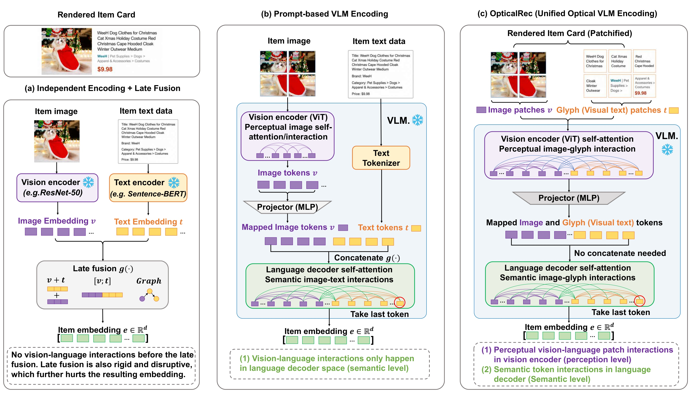
Figure 1左侧展示分别得到图像和文字向量后融合，中间展示图片token与独立文本token进入解码器，右侧展示字形和商品区域先在视觉编码器内部互动。右侧紫色模块处理共同的图像patch，绿色模块处理投影后的共同token，灰色投影器负责连接两种模型内部空间。这里的统一并非删除所有投影或压缩，而是删除为两条独立模态向量额外设置的晚融合步骤。与提示基线相比，新增的是视觉层已经能够读取渲染文字；语言层则仍然发挥作用。原图底部的对照说明属于框架对象，指出了作者所希望改善的交互位置。训练与使用需分开理解：先离线渲染与冻结编码，得到可缓存的物品特征；之后训练推荐骨干；线上若能够复用缓存，则主要走常规用户物品匹配。新增商品与价格更新会引起重新渲染及编码，冻结只减少优化开销，并没有消除前向计算。论文的渲染效率表不能自动代表整个视觉语言特征生产流水线的耗时。
2.3 互信息差与成立条件
原文第3.3节用互信息衡量表示保留原始图文输入的信息，把两种方案的差拆成融合前后损失与统一编码的额外保留量。将原式（6）至（8）合并写出：
符号解释：$I(\cdot;\cdot)$为互信息，$x_i$为原始图文输入，$\Delta I$是最终表示间的信息差，$I_{cross}^{OR}$是统一表示相对融合前向量的信息差，$D_{intra}^{LF}$是融合造成的信息差。这个分解本身由加减同一中间量成立，但并不自动确定两项的符号。作者将第一项解释为跨模态交互增益，第二项解释为模态内部信息受到晚融合扭曲的损失。第二项在确定性链$x_i\to z_i^{LF}\to q_i^{LF}$下，由数据处理不等式得到非负；要严格大于零，还需融合实际丢弃与输入相关的信息。可逆拼接不满足这种严格损失前提，不能由“采用拼接”几个字直接推出严格损失。
附录A.1进一步引入布局所含的跨模态信息$c_i$，原式（10）重复增益定义，原式（12）重复损失定义。关键额外假设与原式（11）、（13）的关系是：
符号解释：$c_i$是作者认为由图文结构暴露的额外交互信息，竖线表示条件互信息。前两个正值条件意在要求分离表示无法完整恢复交互信息，且统一编码实际保留了它；最后一个不等式来自数据处理原则。这些假设不能变成任何冻结编码器都必然严格增益的保证。 尤其是，仅保留一部分新信息并不排除统一编码损失了更多原有信息，仍需进一步条件连接总互信息的比较。字体识别失败、图像缩小或向量容量不足都可能抵消收益。高维连续确定性表示的互信息估计还需要分布与噪声建模，原文没有实测这些量，所以应把理论看作带条件的表示设计论证，而非已完成的普遍严格证明。
附录A.2用潜在注意力交互预算解释容量，原式（14）为：
符号解释：$L,H$分别是层数和注意力头数，$|V|,|T|$为图像与文字字形token数量，$d_h$为每头维度。作者代入32层、32头、128维及两种token约各256个，得到约$8.6\times10^9$的潜在交互规模。这里计数的是结构可以容纳的跨区域运算规模，没有给出每次运算产生多少可用于推荐的信息，也不是速度、显存或实测互信息。更多潜在交互意味着模型有机会学习联系，但冻结模型是否利用这些联系，以及它们对推荐是否有用，仍要由后续实验判断。
2.4 矩阵有效秩
原文第3.4节及附录A.3把物品表示堆叠成矩阵，以奇异值谱的分散程度作为信息丰富性的可计算代理。原式（9）与（15）至（18）对应：
符号解释：$X$是非零物品嵌入矩阵，$U,V$为奇异向量矩阵，$\Sigma$含非负奇异值$\sigma_j$，$r$是可用非零奇异值方向数，$p_j$是归一化谱，$H$是香农熵。原文为简化令维度与秩相等，这里用$r$避免把一般矩阵的列数无条件当作真实秩。当一个方向支配全部能量时有效秩趋近一，多个方向均匀利用时趋近$r$，比只数非零奇异值更能反映表示集中。它仍受中心化、尺度、样本集合和维度影响，应在一致处理下比较。有效秩高意味着变化分布更分散，不等于推荐信息量严格更高；因此作者还报告了其与Recall的相关性，用经验关联补充代理指标解释，不能把这一步当作因果证明。
3. 实验结果
3.1 数据规模、训练设置与可比性
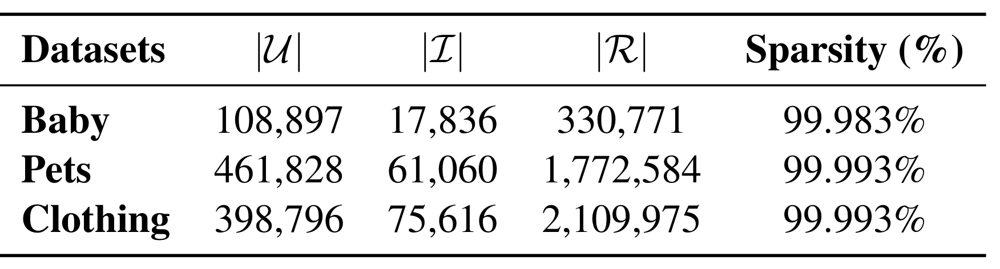
Table 1给出Baby的108,897用户、17,836物品、330,771交互，Pets的461,828用户、61,060物品、1,772,584交互，Clothing的398,796用户、75,616物品、2,109,975交互。三个稀疏度依次为99.983%、99.993%、99.993%，分母应理解为用户数乘物品数的可能配对空间，而不是缺失元数据比例。原文附录称采用五核过滤，并剔除缺少所需元数据的物品；如果五核要求最终图里每个用户至少五次交互，那么Baby和Pets的交互数除用户数分别约3.04和3.84，与这个解释不一致。这是本笔记根据公开计数提出的待核验点，可能与过滤次序、划分后的交互数或统计集合有关，论文没有充分说明，不能替作者确定原因。也因此不能由表中稀疏度推断真正的零样本冷启动效果。三个品类是同一电商来源的离线数据，品类数量并不能替代跨平台与线上验证。
作者使用AdamW，学习率候选为$10^{-3}$与$10^{-4}$，最多500轮，每轮验证，连续10轮验证性能无改善则早停，保存验证最优模型测试。嵌入或模型大小搜索64、128、256、512、1024、2048，图层数搜索1、2、4、8，dropout从0.1到0.8按0.1变化，weight decay搜索$10^{-6},10^{-4},10^{-2}$。这些候选说明作者做了调参，但原文没有完整逐模型最优配置、重复随机种子及标准差表。训练验证测试划分比例、按时间还是随机划分、候选过滤及负例评测策略，也未在所读版本中详细披露。因此主表可用于比较作者设定下的离线结果，完整复现流程仍有缺口，不能声称已获得严格等预算的独立复现。
3.2 主表的平均提升与逐列反例
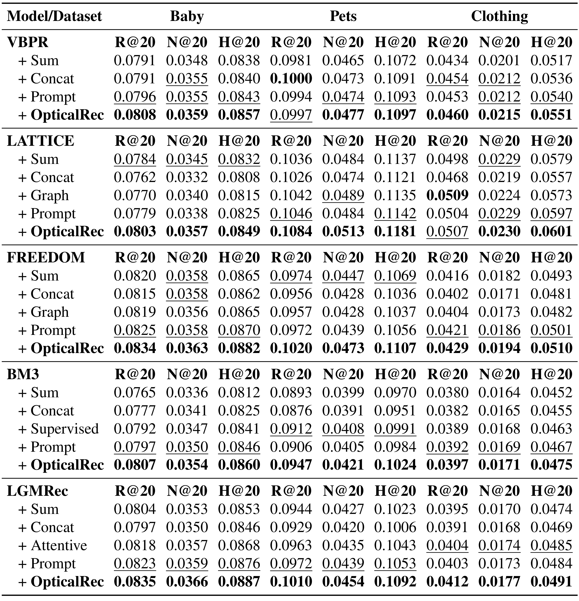
Table 2按五个推荐骨干、三个品类与三个指标组织，共45个OpticalRec结果单元格。Recall@20衡量前二十候选找回相关物品的比例，NDCG@20同时考虑命中位置，Hit Ratio@20衡量是否出现命中；它们是离线排序评价，不是实际购买转化率。作者报告相对最强基线的总体平均提升2.12%，Baby、Pets、Clothing分别为1.65%、3.21%、1.51%，NDCG平均提升2.41%，Recall为1.97%。这些是相对百分比，不能写成NDCG绝对提高2.41个百分点。每列比较分母是该骨干、该品类、该指标的最强已有编码结果，而不是把所有结果都固定除以提示基线或传统单模态。
例如FREEDOM在Pets的NDCG由最强基线Sum的0.0447提高至0.0473，绝对差0.0026，相对变化约5.82%；Recall由0.0974至0.1020，Hit Ratio由0.1069至0.1107，三个指标方向一致。LATTICE在Pets则从最强基线的Recall 0.1046、NDCG 0.0489、Hit Ratio 0.1142提升至0.1084、0.0513、0.1181。这个例子也显示不能每列机械使用同一种对照：Recall和Hit Ratio最强为Prompt，NDCG最强为Graph。作者给出LATTICE、FREEDOM、LGMRec平均增益分别2.29%、2.88%、2.29%，VBPR为1.09%，与图骨干可能更善于利用新内容向量的解释相容，但不足以单独证明图传播机制的因果作用。
主表中有必须明确列出的反例。VBPR在Pets的OpticalRec Recall为0.0997，低于Concat的0.1000，尽管其NDCG和Hit Ratio更高；LATTICE在Clothing的Recall为0.0507，低于Graph的0.0509。按公开四位小数逐列比较，OpticalRec在45格里43格超过其他变体，两个Recall格未获最佳。因此原文叙述里“所有骨干和数据集超过最强基线”应理解为总体趋势，不能翻译为每个指标严格更优。表题使用“多数情况”更准确。排序位置改善与召回不增加可以同时发生，实务上也应按业务目标决定权重，不能用平均值遮盖目标指标的局部下降。
其他骨干的结果帮助判断效应是否只在宠物品类出现。BM3在Baby的OpticalRec Recall、NDCG、Hit Ratio为0.0807、0.0354、0.0860，对应Prompt为0.0797、0.0350、0.0846；在Pets分别为0.0947、0.0421、0.1024，强监督变体对应0.0912、0.0408、0.0991。LGMRec在Baby的NDCG由Prompt 0.0359到0.0366，在Clothing由最强Attentive 0.0174到0.0177。这些绝对变化不大，尤其缺少置信区间时，应保持效果幅度判断的谨慎。本文没有线上实验、显著性主表或完整冷启动切片，不能将这些数值直接变成上线收益预测。
3.3 双层注意力与表示几何
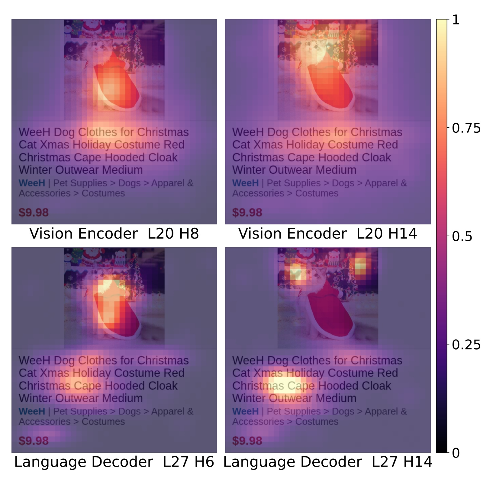
Figure 2选取与猫、圣诞和服装相关的query patch，展示视觉编码器第20层第8与第14头，以及语言解码器第27层第6与第14头。上排注意力相对广泛分布在商品与文字区域，下排更集中在语义相符的位置，这为“先感知上下文、再语义对齐”的解释提供实例。颜色条只是该可视化中注意力强度的归一化显示，不能据此跨不同层和头推断绝对贡献。商品卡片文字是热图底图的一部分，显示了模型的确能看见字形区域，但一个商品案例并不能说明所有品类、所有头都形成同样模式。更强的检验应遮挡图像、遮挡文字或替换矛盾描述，再测得分变化，并统计案例分布；原文没有提供这种因果干预，所以本图支持机制可行性而不是独立证明机制必然导致主表提升。
图中显示的是选定层和头的局部证据，没有解释为何选择这些头，也未报告不同商品上热图稳定性的量化指标。同样的注意力亮度可能出现在错误描述附近，因此需要同时检查正确匹配与错误匹配，才能判断关注字形是否产生了实际语义判别。
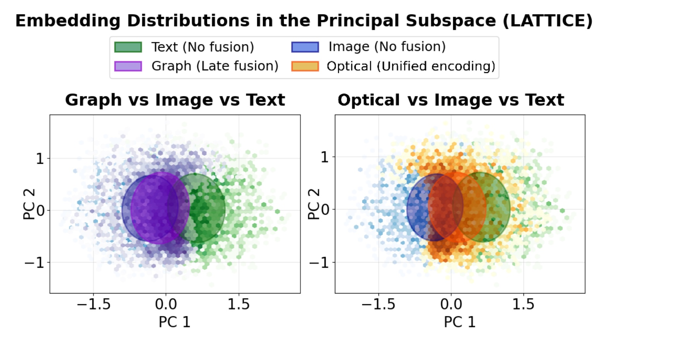
Figure 3展示LATTICE主子空间上的PCA投影，绿色为文字，蓝色为图像，紫色为Graph晚融合，橙色为光学统一编码，并绘制50%置信椭圆。作者解释为统一表示处在图像与文字的分布之间，而晚融合更偏向某个单一模态；图中两个面板对照提供这种几何直观。需要注意，中间位置不是一个先验的最优解，不同模态的重要性本就可能随品类与用户变化。二维投影还会丢弃其他方向，置信椭圆表示分布轮廓而非推荐性能置信区间。图没有直接测量单个图文对是否正确对应，也不能证明不存在模态偏置。读者应把它与有效秩及实际排序结果联合阅读：分布更统一是合理解释线索，最终有用性仍然依赖用户行为目标和高维完整表示。
如果两个模态本来描述的因素不同，强行把它们挤进同一投影区域还可能隐藏互补信号。一个值得补充的对照是按类别和品牌着色，检查橙色分布是否保留了真实语义邻居，再用用户交互相似性评价邻域，而不能仅凭椭圆相交判断对齐质量。
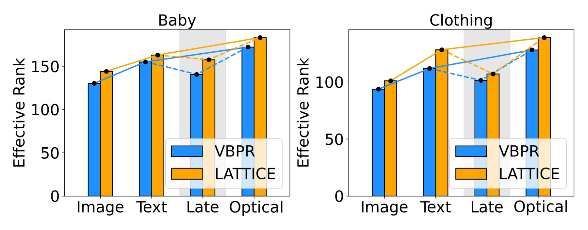
Figure 4比较图像、文字、晚融合与OpticalRec的有效秩，显示Baby和Clothing上VBPR及LATTICE两种骨干，灰色区域标记晚融合相对单模态表示下降。作者正文给出OpticalRec平均有效秩155.6，晚融合126.7，前者相对后者高22.81%，相对最强单模态文字高11.54%；晚融合则比文字低9.18%。这说明在所检查设置中，统一编码的奇异值谱更分散，没有像晚融合那样集中在少数方向。其分母分别是晚融合有效秩或文字有效秩，不能把22.81%理解为推荐指标提升。图只直接包含两个品类和两个骨干，不能替代全部十五个骨干品类组合的谱统计。若未控制矩阵预处理、嵌入维度及噪声，有效秩提升也可能来自无关变化，故仍需保留“表示质量代理”的表述。
数值由奇异值归一化后计算，因此整体乘以相同常数不会改变有效秩，但不同方向的缩放会改变结果。比较时必须统一处理方式，防止推荐模型输出的尺度或维度差异影响谱。附录推导描述的是数学统计量的性质，并没有证明每一个新增方向都对应用户偏好。
3.4 分辨率、布局与长文本敏感性
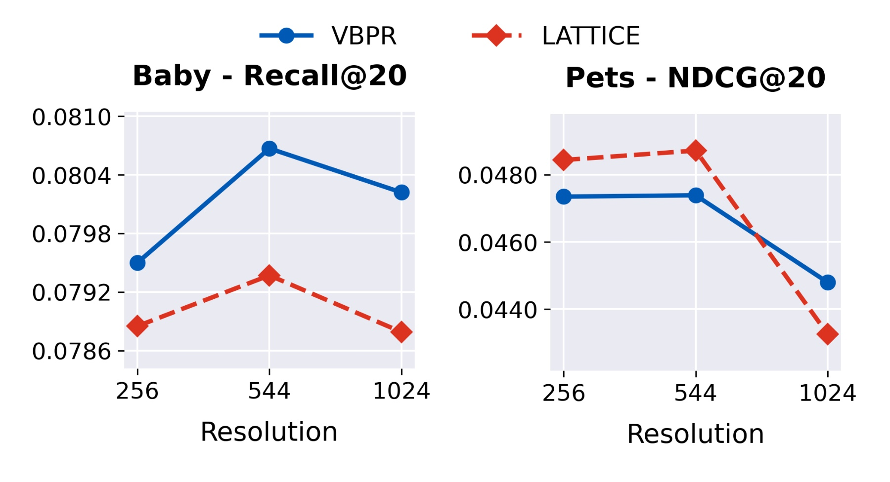
Figure 5考察256、544与1024三种方形分辨率，图中直接绘出Baby的Recall与Pets的NDCG，以及VBPR、LATTICE两条曲线。作者认为544整体最好，且无需极高分辨率；但从图形看，Pets的VBPR在256与544相当，1024反而下降，因此不能概括为分辨率增加总能提高效果。较小输入可能损失字形细节，较大输入可能改变区域比例、token数量或预训练模型的处理行为，论文没有逐一分离这些原因。公开图没有配套全部精确坐标表，本笔记仅引用趋势，不从图上估算多位小数。最合理的结论是该模板在中等分辨率已经有效，而非544对任何文字长度、语言和商品类型都是通用最优。长描述采用不同形状的画布，不能把这里的方形分辨率结论直接推广过去。
两幅子图还使用不同品类和不同指标，因而曲线高度不能跨图相互比较。需要分别用各自默认条件作为参照，并控制原商品图占画布比例。原文没有给出每种分辨率的实际视觉token数或编码耗时，所以这里也只能判断效果敏感性，不能计算精确的效率最优点。
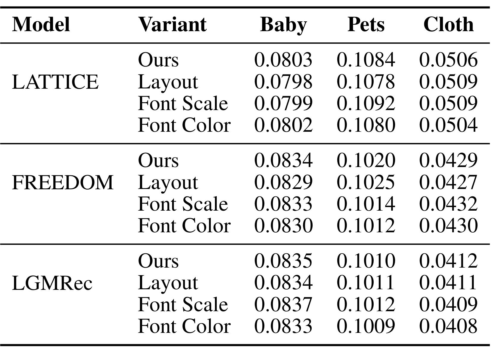
Table 3中的布局实验对50%的数据随机打乱四个字段的位置，字体实验对50%的数据放大或缩小25%，颜色实验将渲染文字变为黑白。三骨干、三品类的Recall相对默认都在正负1%以内。例如FREEDOM在Pets由0.1020到颜色扰动0.1012，相对下降约0.78%；LGMRec在Clothing由0.0412到0.0408，相对下降约0.97%，接近作者给出的范围边缘。这说明该模型对有限幅度模板变化有容忍度，不能等同于复杂网页、低对比度、字符重叠或任意多语言字形均鲁棒。值得注意，LATTICE的Clothing默认在此表为0.0506，而主表为0.0507，笔记保留各自原值，不用推测种子或四舍五入来消除差异。表内比较可用，跨表差异来源未披露；±1%是相对偏差，也不是一百分点的Recall变化。
布局与字体大小扰动只作用于一半样本，剩余样本仍保留默认模板；它不同于把整个训练和测试目录都迁移到新排版。颜色变化虽然覆盖全部文字，仍没有改变图片内容和字段语义。这些控制因素应与严重损坏测试区分，结果说明局部容错，不代表对输入分布整体迁移免疫。
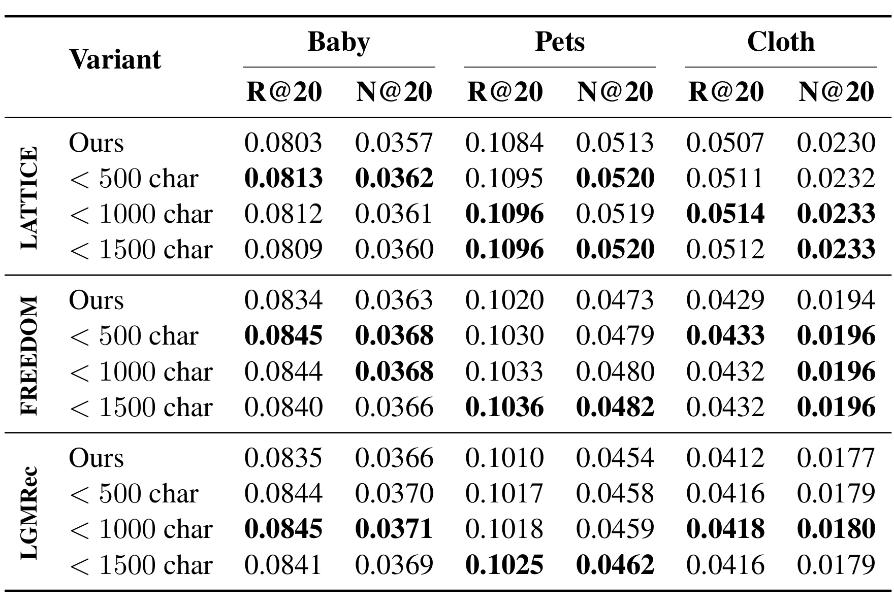
Table 4在默认四字段之外加入物品详细描述，比较少于500、1000、1500字符的截断阈值，显示更多文字能产生小幅收益，但并不单调。例如LATTICE在Clothing的Recall由0.0507升至1000字符条件的0.0514，再到1500字符时回落至0.0512；FREEDOM在Pets的NDCG则从0.0473经0.0479、0.0480继续到0.0482。LGMRec在Baby的Recall从0.0835到1000字符的0.0845，1500字符时为0.0841。作者汇总额外收益约0.7%至1.6%，1000字符附近饱和，平均提升约1.14%。这些相对提升分母是该骨干默认OpticalRec，不是主表最强传统基线。作者称1500字符覆盖94%的物品，可放入512乘1024卡片，OCR接近100%；但未给完整识别器、语言分布和测试协议，OCR数字应保持作者报告身份，不能据此宣称所有渲染文本都无损。长文本也改变了画布，信息量与版式成本尚未严格解耦。
三个截断条件在不同指标上的最佳行不同，不能用“越长越好”概括全部表格，也不能把1000字符视为硬限制。长度实验增加了原默认卡片没有的描述字段，因而除了字形识别能力，还同时测试了新增语义内容是否有帮助；下一步应在相同描述信息下比较提示编码和光学编码。
3.5 离线开销与另一种VLM
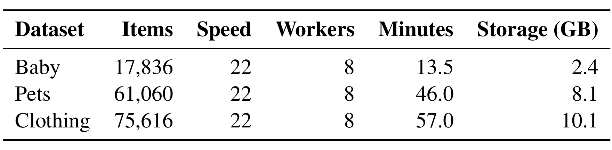
Table 5给出Baby 17,836物品需13.5分钟、2.4GB，Pets 61,060物品需46分钟、8.1GB，Clothing 75,616物品需57分钟、10.1GB；三行均使用8个worker，速度为22张每秒。物品数除表内分钟与秒数可得到约22张每秒，说明这里的速度更接近总吞吐，而不是每个worker各22张每秒。最大的Clothing数据确实可以在约一小时内完成渲染，卡片总存储也在十GB量级，但这些数字测量的是绘图预处理。表中没有冻结Qwen3-VL前向编码的GPU时间、峰值显存、嵌入存储、数据装载与推荐训练成本，也没有元数据频繁变化的增量重建开销。一次离线执行可以把成本摊销到多个用户请求，不能把它说成零开销。上线判断应把渲染、编码、缓存、更新和失效重算一起计费，冻结只意味着没有编码器反向优化。
表中workers是绘图并行进程，不能当作八张GPU，也没有给出处理器型号及CPU使用率。目录物品数是该预处理的工作量分母，并非用户请求量。缓存命中时的服务开销和首次生成时的离线开销需要分别报告，才可以回答物品新增频率多高时仍值得采用。
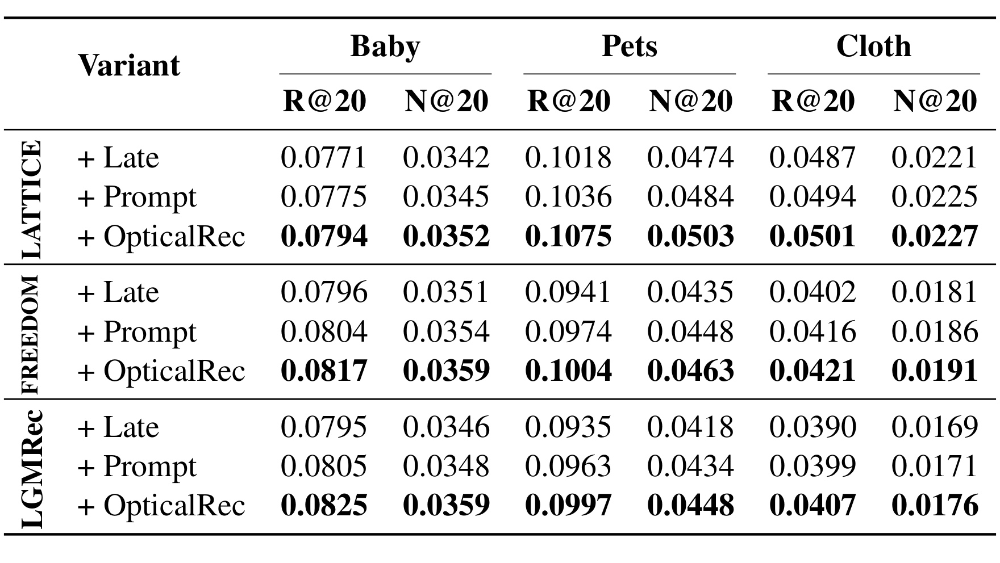
Table 6改用InternVL3.5-8B，覆盖LATTICE、FREEDOM、LGMRec三骨干与三个品类，只报告Recall和NDCG，共18个OpticalRec单元格，都高于表内Late和Prompt。作者报告平均相对次优基线提升2.51%，不能与Qwen主表的45格平均作严格同口径比较。在Pets上LATTICE的Recall由Prompt 0.1036到0.1075，NDCG由0.0484到0.0503；FREEDOM分别由0.0974到0.1004、0.0448到0.0463；LGMRec由0.0963到0.0997、0.0434到0.0448。这是对同一编码思想在第二个模型系列中的支持，降低了结果完全依赖单个VLM的可能性，但没有覆盖更多规模、闭源模型和非电商任务。作者局限章节提及模型尺度，所展示可量化对照主要仍是两个八十亿参数系列，不应凭这张表制造完整规模缩放结论。
在Baby上，FREEDOM的Recall从Prompt的0.0804到0.0817，NDCG从0.0354到0.0359；Clothing的NDCG从0.0186到0.0191。同一骨干在多个品类上方向一致，是迁移结果中比较稳健的部分。可是两个VLM都具有图中文字理解能力，它们之间的迁移不能推导到不擅长读字的纯视觉编码器，也不能证明不同模型都无需调模板。该表依旧未报告运行误差，需要独立复现实测确认小幅差距，同时检查调参预算是否一致。
3.6 有效秩与推荐性能的相关性
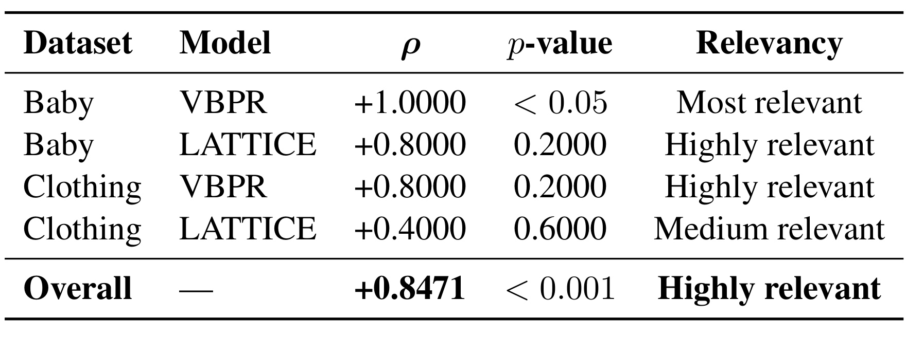
Table 7给出总体Spearman相关系数0.8471且$p<0.001$，正文将其近似写为0.85。这支持有效秩与Recall在汇总样本上的正相关，但分组证据并不全部显著。Baby上VBPR为1.0000且$p<0.05$，Baby上LATTICE为0.8000且$p=0.2000$，Clothing上VBPR也为0.8000且$p=0.2000$，Clothing上LATTICE为0.4000且$p=0.6000$。表的“高度相关”标签描述系数大小，不应翻译成每个分组都通过统计显著性检验。汇总相关也可能受品类、骨干或编码类型共同影响，原文没有充分说明样本单位、样本数、跨组标准化及多重检验处理。不能由此反向选择有效秩最高的向量就保证得到最优推荐；更可靠的用途是把谱作为诊断工具，再结合验证集性能、语义扰动及不同训练种子的稳定性判断。
特别是Clothing的图骨干相关系数只有中等水平，说明即使总体关联较强，局部配置间的排序仍可能不一致。若不同设置的推荐得分接近，而有效秩差距较大，使用代理指标选型就会面临风险。更完整的分析应展示每个点的编码方式和样本量，并在同一个骨干品类内部重复测试，而不是只依赖汇总后的显著性标签。
4. 总结
OpticalRec最有价值的贡献，是把商品图文互动前移到视觉编码器：标题、品牌、类别和价格成为商品卡片的字形区域，与原图片共同进入冻结视觉语言模型，再将统一向量交给协同过滤骨干。它让“多模态特征是否有用”变成一个更具体的问题：交互在哪一层发生，压缩前是否看到了图文对应。主表与另一VLM对照支持这一方案在三个电商品类上的总体离线优势，注意力与有效秩提供解释线索，有限模板扰动显示一定稳定性。证据支持继续研究这个接口，但没有完成全场景优越性的证明。
作者明确列出的局限，是研究集中在特征式多模态协同过滤，还需要覆盖更多推荐领域与任务；目前检验多个骨干、渲染条件和文本长度，并不能替代更广泛验证。原文还表示将在最终版本释放渲染卡片和嵌入，本轮未核验到独立代码或项目页，所以不能把计划发布等同于已经开源。冻结VLM使实验更可控，但也意味着本文未回答端到端推荐目标微调是否会保留同样收益。读者应把这些作者范围限定与下面的独立审阅风险分开。
本笔记的补充风险至少包括四方面。第一，互信息的严格正增益依赖额外交互信息及其有效保留，数据处理原则本身只能给出非负融合损失，缺少更强条件时不能保证统一编码总信息量增加。第二，主表有两个Recall反例且缺少多种子误差与显著性报告，小幅平均收益的稳定性仍需复核。第三，卡片渲染耗时未覆盖VLM编码、更新和存储全链路，价格或标题频繁变化时摊销方式可能改变。第四，缺失模态、语言变化、品牌偏置、图文矛盾、冷启动与真实线上目标未被专门验证。另有五核统计与逐表默认值差异，属于公开材料的可复现口径缺口，不能由笔记自行填平。
后续可进行三组具体测试。先固定物品集合、文本字段、向量维度与调参预算，复现独立编码、提示编码、统一像素编码，重复种子并给逐列置信区间，核对两个Recall下降格是否持续存在。再做图文遮挡、字段交换与相反描述干预，检验视觉层交互是否确实改善语义匹配，并分别统计长尾、缺失元数据和多语言切片。最后按目录更新频率测量渲染、VLM编码、缓存和向量重建的总成本，把离线指标收益与特征生产成本一起评估；这些是未来验证计划，本次没有执行。
对推荐工程的启发是，改善物品特征的交互方式可能比持续增加图结构复杂度更直接，但必须由下游行为目标检验。对视觉语言模型研究的反向启发是，识字与版面理解能力可以作为固定特征接口服务个性化任务，推荐结果也能暴露统一表示是否真的保留了有用图文关系。两边都应避免只优化代理指标：推荐不能只追求有效秩，视觉语言编码也不能只追求漂亮注意力图。把表示诊断、行为排序与成本更新连成一个可核验闭环，才是本文能够延伸的研究路线。